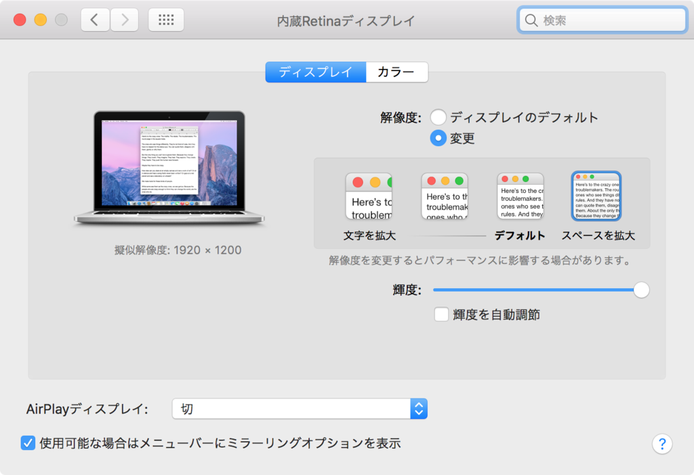

MacBook Pro 13インチに 1920x1200 の解像度を追加する

Early 2015 の MacBook Pro 13インチ Retina (MacOS Sierra) を使っている。何やら解像度を 1680x1050 よりも大きい 1920x1200 にする方法があるようなので試してみた。
以下の記事がそのままなので、特筆する内容はなし。
SIP の無効化は、
csrutil disable
もやっておいた。
あとは自環境が上の記事と同一だったので、
cd /System/Library/Displays/Contents/Resources/Overrides/DisplayVendorID-610/
sudo vim DisplayProductID-a02a
で対象の設定定義ファイルを開き、
<data>AAAPAAAACWAAAAAB</data>
</array> ←既存行
となるように行を追加するだけ。
確かに広い。良い感じ。